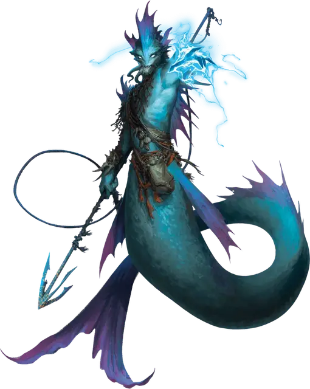

Мерроу мелководный жрец
Merrow Shallowpriest
Большой Монстр, хаотично-злой

Класс Доспеха 15 (природный доспех)
Хиты 75 (10к10 + 20)
Скорость 10 футов, плавая 40 футов
| мод | спас | ||
|---|---|---|---|
| СИЛ | 18 | +4 | +4 |
| ЛОВ | 14 | +2 | +2 |
| ТЕЛ | 15 | +2 | +2 |
| мод | спас | ||
|---|---|---|---|
| ИНТ | 11 | +0 | +0 |
| МДР | 16 | +3 | +3 |
| ХАР | 9 | −1 | −1 |
Чувства тёмное зрение 60 футов, пассивное Восприятие 13
Языки Акван, Бездны
Опасность 4 (1100 опыта)
Бонус мастерства +2
Особенности
Амфибия. Мерроу может дышать и воздухом и под водой.
Использование заклинаний. Мерроу является заклинателем 6-го уровня. Его базовой характеристикой является Мудрость (Сл спасброска от заклинания 13, +5 к попаданию атаками заклинаниями). У него подготовлены следующие заклинания друида:
• Неограниченно: искусство друидов [druidcraft], малая иллюзия [minor illusion], электрошок [shocking grasp];
• 1 уровень (4 ячейки): лечение ран [cure wounds], туманное облако [fog cloud], волна грома [thunderwave];
• 2 уровень (3 ячейки): удержание личности [hold person], отражения [mirror image], туманный шаг [misty step];
• 3 уровень (3 ячейки): рассеивание магии [dispel magic], молния [lightning bolt] (см."Действия" ниже), метель [sleet storm].
Действия
Гарпун. . Рукопашная или дальнобойная атака оружием: +6 к попаданию, досягаемость 5 футов или дистанция 20/60 футов, одна цель. Попадание: 11 (2к6 + 4) колющего урона. Если цель — существо Среднего размера или меньше, она подтягивается на 10 футов в сторону мерроу.
Молния (заклинание 3-го уровня, расходует ячейку заклинаний). Мерроу выпускает разряд молнии формируя линию длиной 100 футов и шириной 5 футов. Все существа в линии должны совершить спасбросок Ловкости Сл 13, получая при провале 28 (8к6) урона электричеством или половину урона при успехе.
Описание
Некоторые из многих мерроу, обитающих в водянистых тенях побережья Менажери, учатся использовать магические аспекты стихий. Часто работая проводниками, ведущими охотничьи отряды мерроу, некоторые из этих мелководных жрецов становятся могущественными лидерами, вдохновляя свои кланы терроризировать прибрежные поселения и проходящие корабли.
Ходят слухи о подземных течениях и озёрах, вырубленных в скале под Дикогорьем, где мелководные жрецы вершат суд над огромными подземными сообществами мерроу. Считается, что эти злые существа ищут средства затопления поверхностного мира, позволяя им красть, кого и что они пожелают, в тёмные воды внизу.
В то время как большинство мелководных жрецов не связывают себя служением определенному божеству, некоторых привлекает поклонение сущностям, которые правят областями Стихийного Плана Воды, надеясь найти средства для расширения своего владычества в морях Экзандрии. Эти мерроу часто возглавляют строительство замысловатых святилищ и храмов на дне океана, подготавливая священное пространство для открытия и поддержания планарных дверей в царство их хозяина.